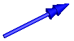

DoubleArrowVisualizing a double arrow with variable size; all data have to be set as modifiers (see info layer) |
Information
This information is part of the Modelica Standard Library maintained by the Modelica Association.
Model DoubleArrow defines a double arrow that is dynamically visualized at the defined location (see variables below).

The variables under heading Parameters below are declared as (time varying) input variables. If the default equation is not appropriate, a corresponding modifier equation has to be provided in the model where an Arrow instance is used, e.g., in the form
Visualizers.Advanced.DoubleArrow doubleArrow(diameter = sin(time));
Variable color is an Integer vector with 3 elements, {r, g, b}, and specifies the color of the shape. {r,g,b} are the "red", "green" and "blue" color parts. Note, r g, b are given in the range 0 .. 255. The predefined type MultiBody.Types.Color contains a menu definition of the colors used in the MultiBody library (will be replaced by a color editor).
Inputs (7)
| R |
Default Value: Frames.nullRotation() Type: Orientation Description: Orientation object to rotate the world frame into the arrow frame |
|---|---|
| r |
Default Value: {0, 0, 0} Type: Position[3] (m) Description: Position vector from origin of world frame to origin of arrow frame, resolved in world frame |
| r_tail |
Default Value: {0, 0, 0} Type: Position[3] (m) Description: Position vector from origin of arrow frame to double arrow tail, resolved in arrow frame |
| r_head |
Default Value: {0, 0, 0} Type: Position[3] (m) Description: Position vector from double arrow tail to the head of the double arrow, resolved in arrow frame |
| diameter |
Default Value: world.defaultArrowDiameter Type: Diameter (m) Description: Diameter of arrow line |
| color |
Default Value: Modelica.Mechanics.MultiBody.Types.Defaults.ArrowColor Type: Color Description: Color of double arrow |
| specularCoefficient |
Default Value: world.defaultSpecularCoefficient Type: SpecularCoefficient Description: Material property describing the reflecting of ambient light (= 0 means, that light is completely absorbed) |
Components (5)
| R |
Type: Orientation Description: Orientation object to rotate the world frame into the arrow frame |
|
|---|---|---|
| world |
Type: World |
|
| arrowLine |
Type: Shape |
|
| arrowHead1 |
Type: Shape |
|
| arrowHead2 |
Type: Shape |
Used in Components (6)
|
Modelica.Mechanics.MultiBody.Forces External torque acting at frame_b, defined by 3 input signals and resolved in frame world, frame_b or frame_resolve |
|
|
Modelica.Mechanics.MultiBody.Forces External force and torque acting at frame_b, defined by 3+3 input signals and resolved in frame world, frame_b or in frame_resolve |
|
|
Modelica.Mechanics.MultiBody.Forces Torque acting between two frames, defined by 3 input signals and resolved in frame world, frame_a, frame_b or frame_resolve |
|
|
Modelica.Mechanics.MultiBody.Forces Force and torque acting between two frames, defined by 3+3 input signals and resolved in frame world, frame_a, frame_b or frame_resolve |
|
|
Modelica.Mechanics.MultiBody.Sensors Measure cut torque vector |
|
|
Modelica.Mechanics.MultiBody.Sensors Measure cut force and cut torque vector |